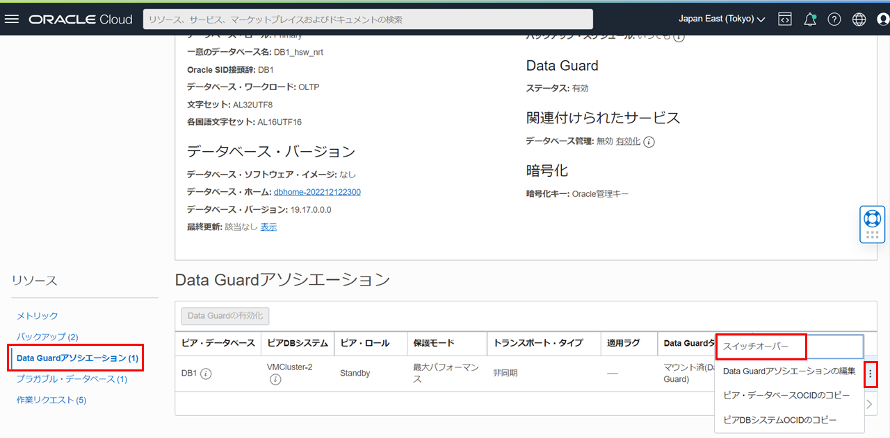
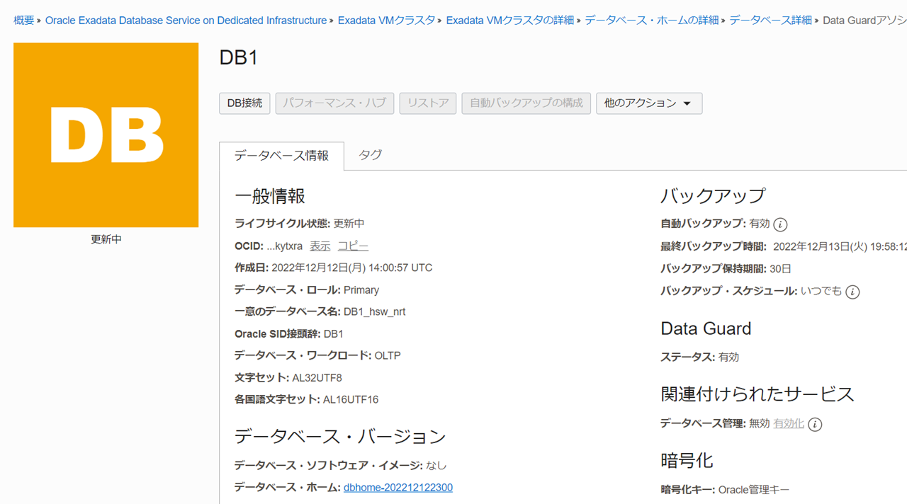
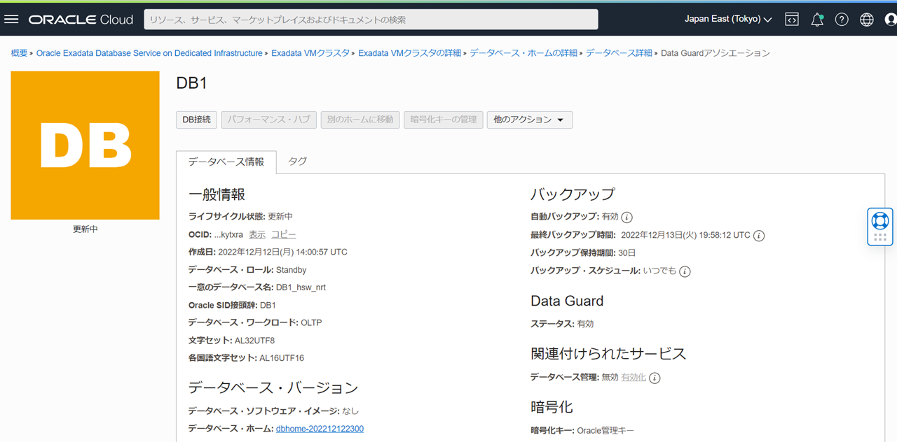
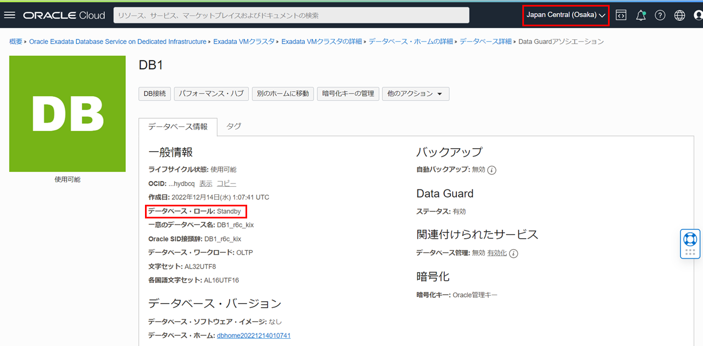

はじめに
Oracle Data Guardとは、変更履歴(REDO)を利用して自動でリアルタイム・データベース複製を持つことが出来る機能です。この機能を利用することによって、データベース障害やリージョン障害などのRTO/RPOを短くすることができ、広範囲な計画停止(メンテナンス)においてもスタンバイをプライマリに切り替えることによって停止時間を極小化することが可能です。バックアップを取得していても、有事の際の復旧において、大量データのリストアが必要になる場合ではRTOを満たせないケースもあります。こういったケースに備えて、バックアップだけでなく、すぐに切り替えられるスタンバイを持つことは重要です。災害対策(DR)としてのデータ保護はもちろんのこと、移行やアップグレードの停止時間短縮といった利用用途もあります。また、参照専用として利用可能なActive Data Guardにしたり、一時的に読み書き可能なスナップショット・スタンバイとして利用したりと、普段から利用できるスタンバイ・データベースを持つことができます。参照処理をオフロードしたり、この仕組みを応用してデータ破損が検知された場合にクライアントにエラーを返すことなく自動修復をしてくれる自動メディア・ブロックリカバリ機能も使えるため、Data Guardであればスタンバイのリソースも有効活用してROIを高めつつ、きちんと切り替えられるスタンバイを持つということが可能です。
ここでは、OCIコンソールからExaDB-Dで別リージョン間(東京、大阪)でのData Guardを構成する手順について紹介します。東京をプライマリ、大阪をスタンバイとして構成します。使用するリージョンは任意です。
目次 :
前提条件 :
- 101 : ExaDB-Dを使おうを通じて、プライマリ・データベースのリージョン（本ガイドでは東京リージョン）でExaDB-Dの作成が完了していること。
- その2 - クラウドに仮想ネットワーク(VCN)を作るを通じて、スタンバイ・データベースのリージョン（本ガイドでは大阪リージョン）でVCNの作成が完了していること。
- プライマリ・データベースのリージョン（本ガイドでは東京リージョン）とスタンバイ・データベースのリージョン（本ガイドでは大阪リージョン）間でリモートVCNピアリングの設定が完了していること。設定方法については、Oracle Cloud Infrasturctureドキュメント - DRGを介した異なるリージョン内のVCNのピアリングをご参照ください。
- プライマリ・データベースのリージョン（本ガイドでは東京リージョン）とスタンバイ・データベースのリージョン（本ガイドでは大阪リージョン）のそれぞれのVCNのセキュリティ・リストの設定でポート1521を開く。設定方法については、Oracle Cloud Infrastructureドキュメント - セキュリティ・リストをご参照ください。
所要時間 : 約2時間 ※環境によって異なるため、参考値です。
1. Data Guardの構成
-
OCIコンソール・メニューから Oracle Database → Oracle Public Cloud上のExadata に移動します。

-
利用したいコンパートメントをリスト範囲のコンパートメントから選択します。

-
利用したいリージョンを右上のリージョンの折りたたみメニューをクリックして、リージョンの一覧から選択します。

-
操作したいExadata VMクラスタの表示名をクリックします。

-
データベースの一覧から対象のデータベースの名前をクリックします。
-
リソースの一覧からData Guardアソシエーションをクリックし、Data Guardの有効化をクリックします。
- Data Guardの有効化 の各項目は以下のように設定します。その他の設定はデフォルトのままにします。
- ピアDBシステムの選択
- リージョン - スタンバイ・データベースを作成したいリージョン（本ガイドでは大阪リージョン）
- 可用性ドメイン - 任意
- シェイプ - スタンバイ・データベースを作成したいVMクラスタのシェイプ
- Data Guardピア・リソース・タイプ - VMクラスタ
- [コンパートメント名]のVMクラスタの選択 - スタンバイ・データベースを作成したいVMクラスタを選択

- Data Guardアソシエーション詳細
- Data Guardタイプ - アクティブなData GuardかData Guardを選択します。（本ガイドでは、Data Guardを選択します。）

- データベース・ホームの選択
- データベース・ホームの構成 - 既存のデータベース・ホームの選択か新規データベース・ホームの作成を選択します。（本ガイドでは、新規データベース・ホームの作成を選択します。）
- データベース・イメージの変更 - カスタム・イメージを使用したい場合はデータベース・イメージの変更ボタンをクリックし、作成済みのカスタム・イメージを選択します。（本ガイドでは、変更はせずに進みます。）
- スタンバイ・データベースの構成
- データベース・パスワード - データベースの管理パスワードを入力します。スタンバイ・データベース管理パスワードは、プライマリ・データベースの管理パスワードと同じである必要があります。
設定後、Enable data guard をクリックします。作成まで1時間ほどかかります。（作成時間は環境によって異なります。）


完了すると、プライマリ・データベースとスタンバイ・データベースが使用可能な状態に切り替わります。


- ピアDBシステムの選択
-
プライマリ・データベースのリージョン（本ガイドでは東京リージョン）のデータベース詳細のリソースの一覧からData Guardアソシエーションをクリックし、スタンバイ・データベースの情報が追加されていることを確認します。

-
スタンバイ・データベースのリージョン（本ガイドでは大阪リージョン）のデータベース詳細のリソースの一覧からData Guardアソシエーションをクリックし、プライマリ・データベースの情報が追加されていることを確認します。

2. Data Guardの切り替え
コンソールやCLIから、簡単にData Guardの切り替え(スイッチオーバー、フェイルオーバー)や、旧プライマリの回復(フェイルオーバー実施後に旧プライマリ・データベースを簡単にスタンバイとして復旧)が可能です。
スイッチオーバー
スイッチオーバーは主に計画停止用途のもので、スタンバイにREDOを転送・適用をしきった状態で、プライマリとスタンバイを切り替えます。そのため、切り替え後には旧プライマリは新スタンバイとしてData Guard構成を保った状態となります。
-
プライマリ・データベースのリージョン（本ガイドでは、東京リージョン）のデータベース詳細のリソースの一覧からData Guardアソシエーションをクリックし、アクション・ボタンをクリックし、スイッチオーバーをクリックします。

-
データベース管理パスワードを入力し、OKボタンをクリックします。プライマリ・データベースの管理パスワードとスタンバイ・データベース管理パスワードは同じパスワードが設定されています。

-
データベースの状態が更新中になります。

-
データベースの状態が使用可能になるとプライマリ・データベース（本ガイドでは、東京リージョン）とスタンバイ・データベース（本ガイドでは、大阪リージョン）のそれぞれのデータベース・ロールが切り替わります。
旧プライマリ・データベース（本ガイドでは、東京リージョン）のデータベース・ロールがStandbyに切り替わっている

旧スタンバイ・データベース（本ガイドでは、大阪リージョン）のデータベース・ロールがPrimaryに切り替わっている

フェイルオーバー
フェイルオーバーは主に計画外停止用途のもので、プライマリ側が利用できない状態の際にスタンバイ側に切り替える際に用いられます。旧プライマリは壊れている状態で切り替えられ、非同期転送をしている場合には未転送分データがない可能性もあり、基本的には切り替え後にスタンバイがない構成となります。そのため、フェイルオーバー後にもData Guardでの可用性構成を組むために、スタンバイを作成して再度Data Guardを構成することが必要となります。
-
スタンバイ・データベースのリージョン（本ガイドでは東京リージョン）のデータベース詳細のリソースの一覧からData Guardアソシエーションをクリックし、アクション・ボタンをクリックし、フェイルオーバーをクリックします。

-
データベース管理パスワードを入力し、OKボタンをクリックします。プライマリ・データベースの管理パスワードとスタンバイ・データベース管理パスワードは同じパスワードが設定されています。

-
データベースの状態が更新中になります。

-
データベースの状態が使用可能になるとスタンバイ・データベース（本ガイドでは、東京リージョン）とプライマリ・データベース（本ガイドでは、大阪リージョン）のそれぞれのデータベース・ロールが変更されます。
旧スタンバイ・データベース（本ガイドでは、東京リージョン）のデータベース・ロールがPrimaryに切り替わっている
旧プライマリ・データベース（本ガイドでは、大阪リージョン）のデータベース・ロールがDisabled Standbyに切り替わっている
回復
フェイルオーバー後に活用されるのがFlashback Database機能です。旧プライマリを障害発生直前(スタンバイが切り替わる前の時点)までデータを戻し(フラッシュバック)、スタンバイにロールを変換してData Guard構成に組み込まれ、フラッシュバックしたことで生じる差分も自動で同期されるため、一からスタンバイを構築する必要はありません。そのため、ExaDB-DのData Guard機能では、コンソール上の『回復』というボタンをクリックするだけで簡単にData Guardが再構成されます。
-
プライマリ・データベースのリージョン（本ガイドでは東京リージョン）のデータベース詳細のリソースの一覧からData Guardアソシエーションをクリックし、アクション・ボタンをクリックし、回復をクリックします。
-
データベース管理パスワードを入力し、OKボタンをクリックします。プライマリ・データベースの管理パスワードとスタンバイ・データベース管理パスワードは同じパスワードが設定されています。

-
データベースの状態が更新中になります。

-
データベースの状態が使用可能になると、Disabled Standbyであったデータベース（本ガイドでは、大阪リージョン）のデータベース・ロールがStandbyに回復されます。

3. Data Guard構成に含まれるDBの削除方法
Data Guardアソシエーションに含まれるデータベースもしくはDBシステムを削除する場合、最初にスタンバイ・データベース(DBシステム)を削除しましょう。スタンバイ・データベースが紐づけられている状態の時に、プライマリ・データベースを削除しようとするとエラーが表示され、削除できません。もし、プライマリ・データベースの環境のみを削除したい場合には、一度ロールを切り替えて削除対象の環境をスタンバイ・ロールにしてから削除という形をとって頂ければと思います。
プライマリ・データベースから削除しようとした場合の例


以上で この章の作業は完了です。
参考資料
- Oracle Cloud Infrastructure Documentation - Oracle Exadata Database Service on Dedicated Infrastructure
- Oracle Cloud Infrastructure Exadata Database Service on Dedicated Infrastructure (ExaDB-D) サービス詳細